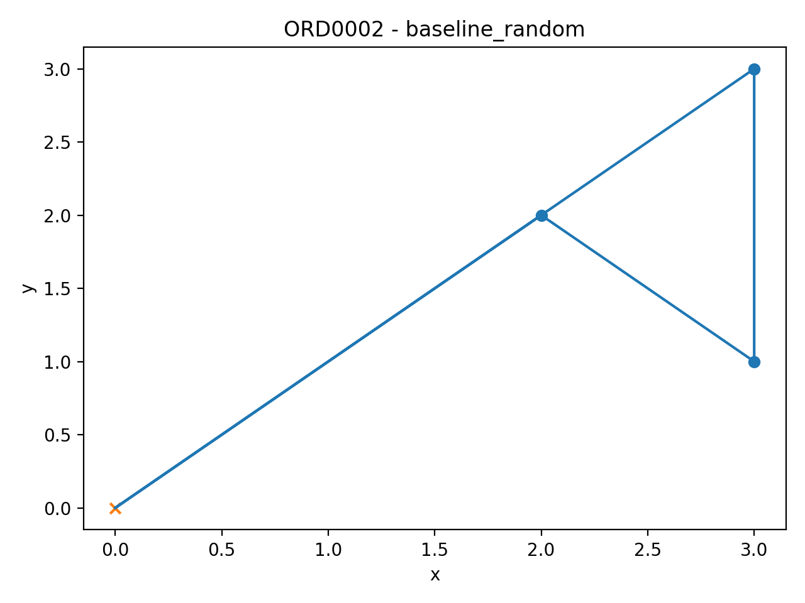

Pick Path Optimization Report (Week 2 MVP)
Sample order visualized: ORD0002
Summary KPIs
- Orders analyzed: 15
- Avg unique picks/order: 3.00
- Avg distance (baseline random): 45.07
- Avg distance (nearest neighbor): 42.00
- Avg distance (zone batching): 42.00
- Avg best distance: 41.87
- Avg improvement vs baseline: 4.55%
Route Visuals (sample order)
Baseline (random order)

Nearest Neighbor
Zone Batching

Outputs
- KPI table:
output/reports/kpi_comparison.csv
- Images:
output/charts/*.png